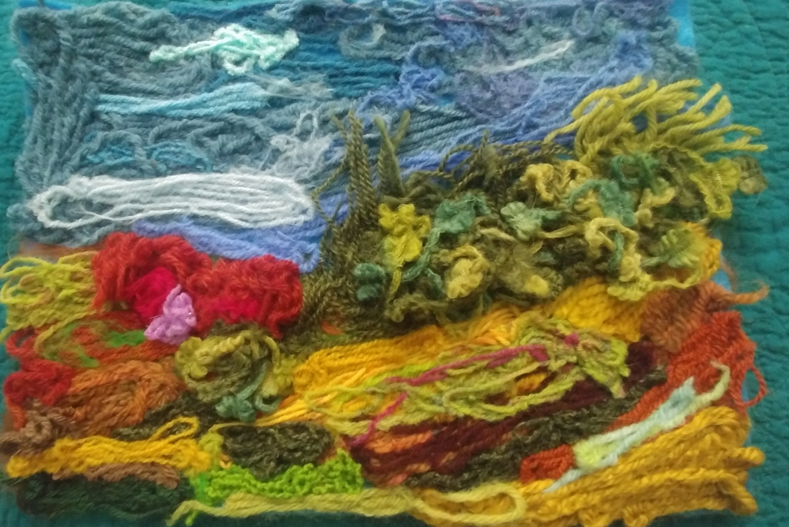
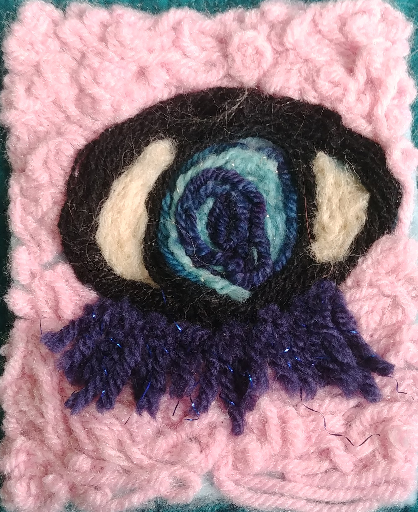
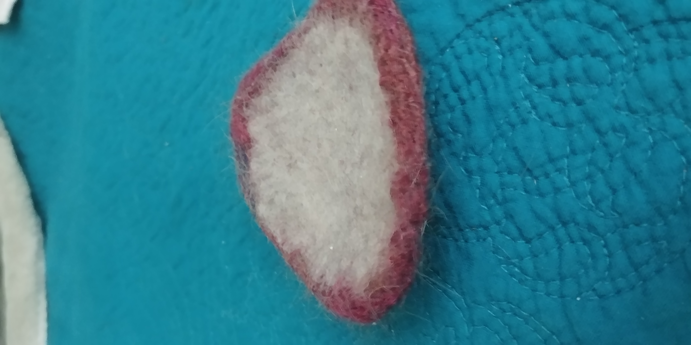

-The Moors-

Inspired by the Moors of England. The Moors are a desolate place that inspired famous literature greats such as Jane Austen and the Bronte sisters.
-Eye-

This is a creepy eye. I think eyes are very creepy.
-Felted Cat Fur Bowl

My mom has a long haired cat who is very soft. I felted the cat hair into some wool to create a little change bowl.
Interested in needle felting? Click here!